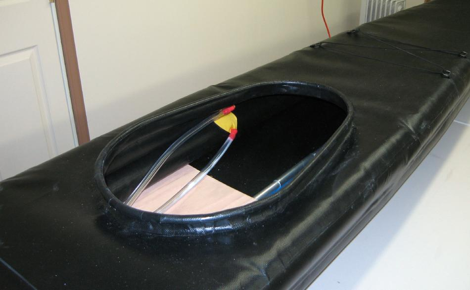

| Sonnet 16 | Menu Previous Page Next Page |
|

The 22" X 15" permanent aluminum tube coaming is wrapped in PVC and glued to the deck. The seat is made from 3/16" plywood and fits over the keel tube and under the sponsons. When the lower sponsons are inflated, the seat is held firmly in place.
|
|